Casa nueva · Senderos, Tigre
Pasá, que la mesa está puesta.
Pastelería de autor, brunch y talleres en una casa blanca entre plantas. La hacemos tres hermanas.
Abierto de miércoles a domingo, 9:00 a 20:00 hs
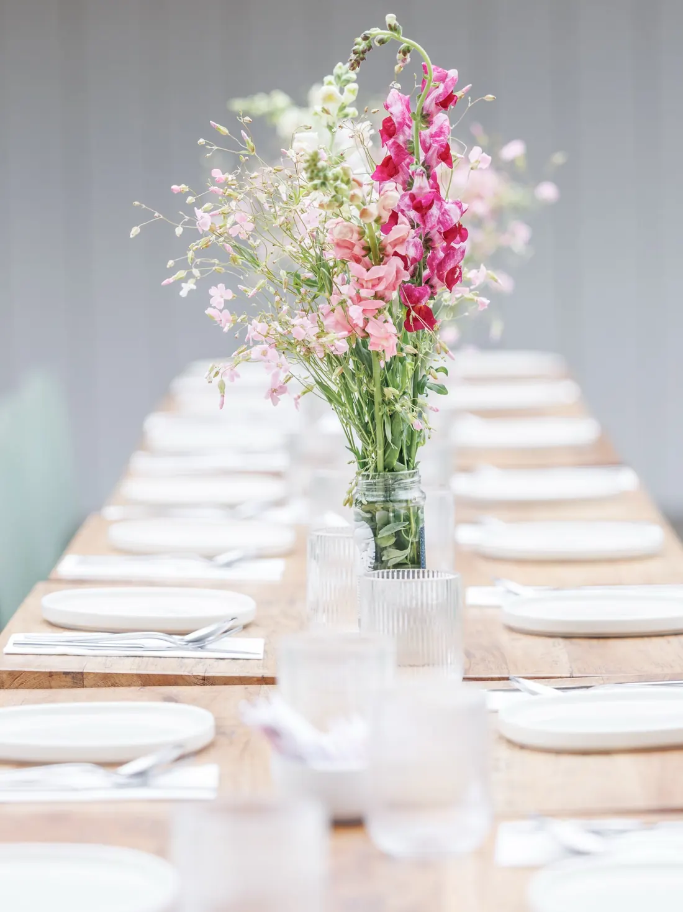
Senderos de Santa María · Tigre
Una casa blanca entre plantas
Galería con techo de cañizo, mesas largas al aire libre y flores frescas que armamos cada semana. Es nuestra casa nueva: mismas tortas, más mesa.
Consultá por tu festejoCumpleaños, baby showers, desayunos de trabajo: armamos la mesa a tu medida.
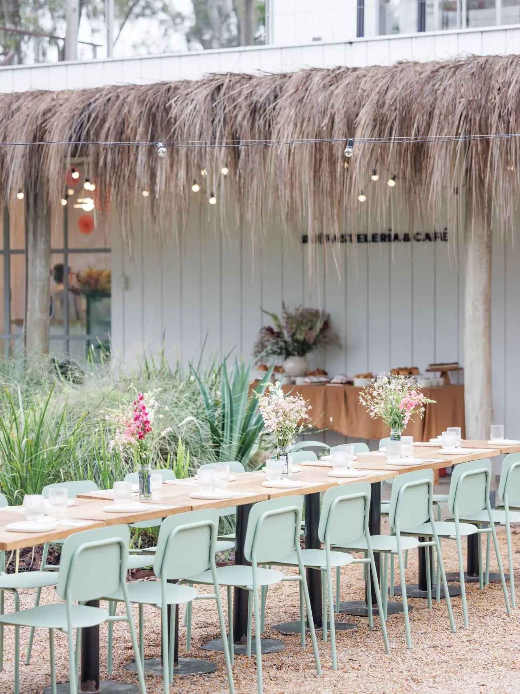
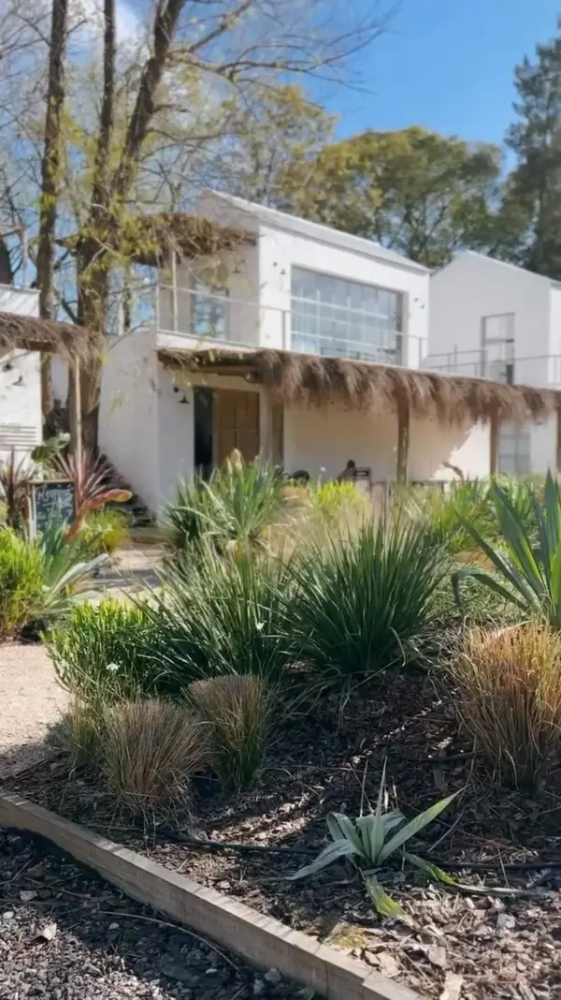
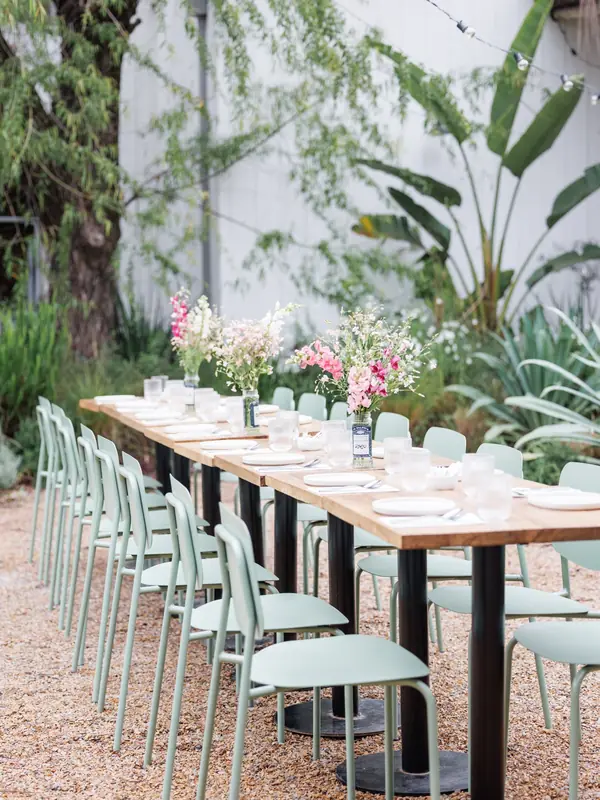
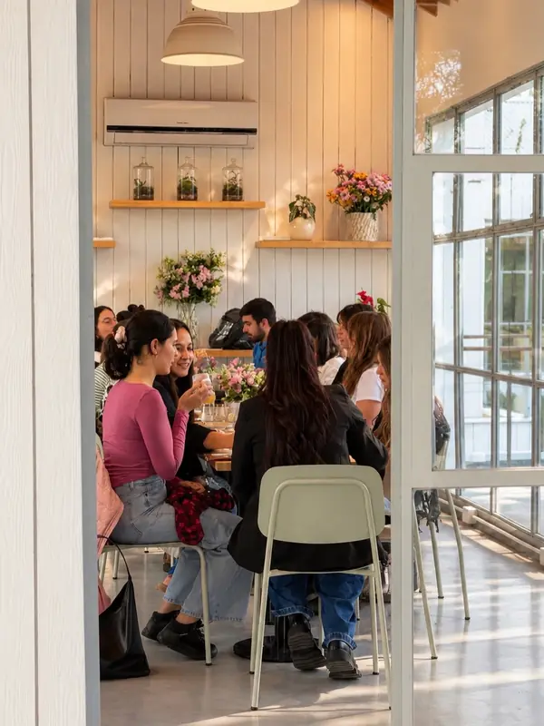
La vitrina
Pastelería de autor
Lo que hay hoy en el mostrador, por porción. Tocá una para verla de cerca.
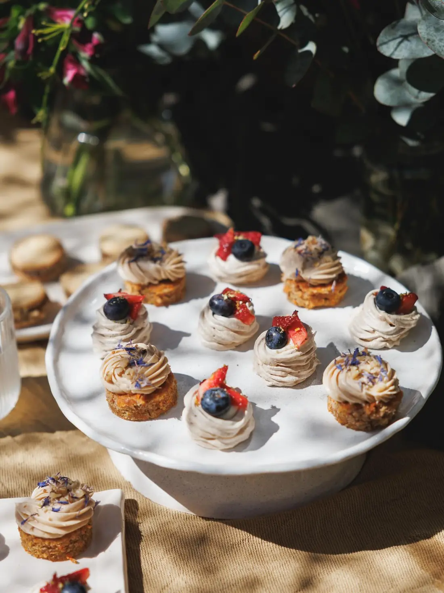
- con 48 h de anticipación
- se confirma con 50 % de seña
- retirás en Senderos
Por encargo
Tortas enteras y boxes
Elegí, decí qué día la retirás y dejá la seña online. Te la tenemos lista.
Precios de ejemplo · RU los carga desde su panel
Talleres y cenas
La mesa larga
Cada plato es un encuentro. Elegí tu lugar en la mesa y reservalo.
tocá un plato
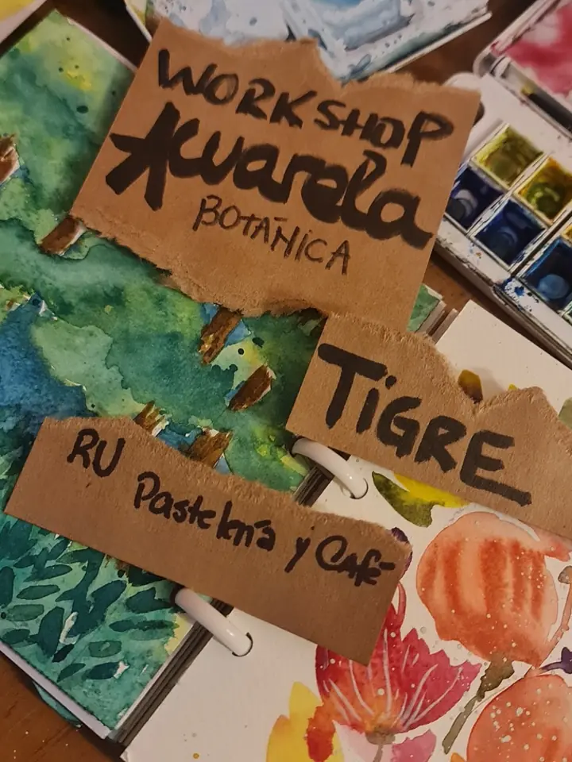
Workshop
Taller
Fecha
Texto
Precio
Fechas y precios de ejemplo · RU los carga desde su panel.
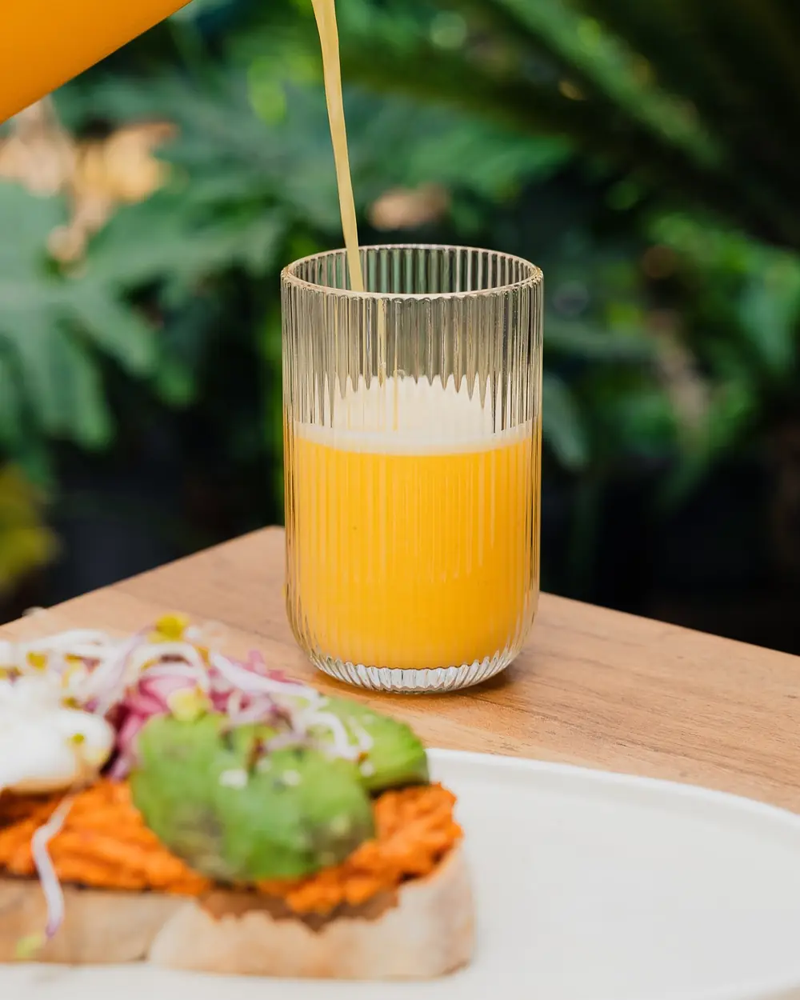
Brunch & partners
Brunch y lunch, todo el día
Para compartir o para vos solo. El resto de la carta, en la mesa con el QR.
Quiénes somos
La hacemos tres hermanas
Nuestro primer RU fue dentro de un vivero en Remeros. Después juntamos todo (el horno, la heladera, la vajilla), lo cargamos en la camioneta y armamos casa propia en Senderos.
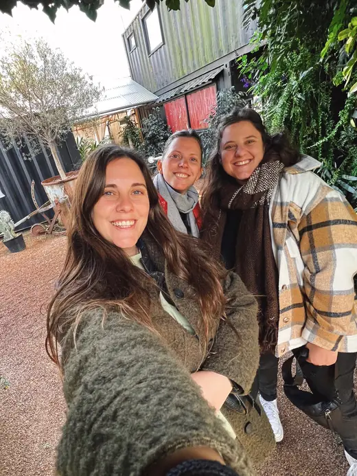
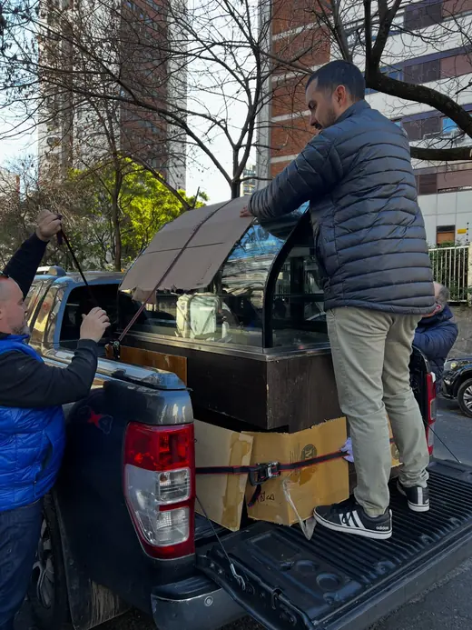
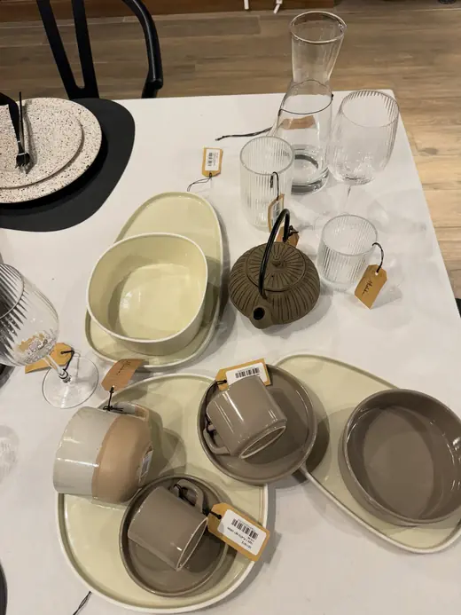
Cómo llegar
Estamos en Senderos
Av. Santa María de las Conchas 6385, Tigre
Senderos de Santa María
Abierto
- Lunes
- Cerrado
- Martes
- 9:00 a 16:00 hs
- Miércoles a domingo
- 9:00 a 20:00 hs